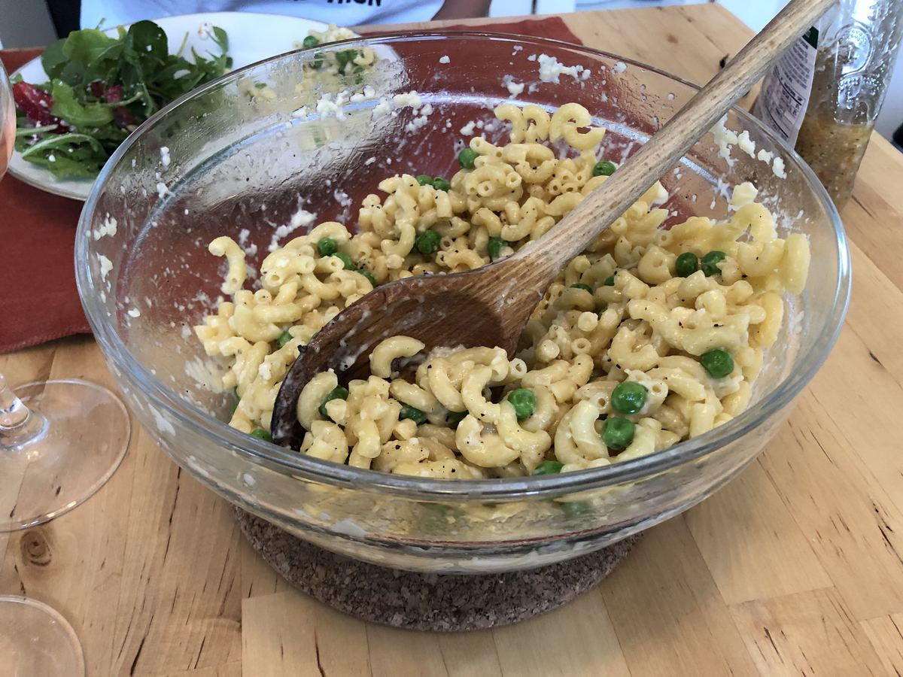

Based on Vegetables Unleashed Jose Andreas, pg. 102
Personal rating: 3 / 5

2 cup elbow macaroni
6 cups water
1 tsp kosher salt
1 cup frozen corn kernels, frozen peas, or fresh peas
4 Tbsp butter
1 cup grated Pecorino Romano or Parmigiano-Reggiano
Ground pepper
Combine pasta and water in a microwaveable bowl, add a pinch of salt, and microwave on high for 5 min
Stir in the peas and return for 1 more minute
Working quickly, pour off most of the water until a few Tbsp remain
Vigorously stir in butter and cheese. Caution to not stir too much or the cheese can ball up and not be evenly distributed
Serve with fresh ground pepper